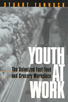

<body bgcolor="#FFFFFF" text="#000000" link="#0000FF" vlink="#CC0000" alink="#CC0000"><center><hr width="350" size="1" align="center" noshade>An ethnographic study of young unionized workers in the U.S. and Canada<hr width="350" size="1" align="center" noshade><p><a href="https://cdcshoppingcart.uchicago.edu/Cart/ChicagoBook.aspx?ISBN=9781566398534&&PRESS=temple" target="_top">Buy this book!</a> | <a href="https://cdcshoppingcart.uchicago.edu/Cart/Cart.aspx?PRESS=temple" target="_top">View Cart</a> | <a href="https://cdcshoppingcart.uchicago.edu/Cart/Cart.aspx?PRESS=temple" target="_top">Check Out</a></p><p></p></center><!--none//--><h1>Youth at Work</h1>
<H2>The Unionized Fast-food and Grocery Workplace</H2>
<h3>Stuart Tannock</h3>
<P>cloth 1-56639-853-3 $74.50, Apr 01, <FONT COLOR=#990033>Out of Stock Unavailable</FONT>
<br>paper 1-56639-854-1 $32.95, Apr 01, <FONT COLOR=#990033>Available</FONT>
<BR> 264 pp
6x9
</P><BLOCKQUOTE><I>"In this engaging and thought-provoking book, Stuart Tannock poses a startling question: Why shouldn't young workers receive good pay, respectful treatment, and decent working conditions? Giving voice to young people in fast-food and supermarket work, he shows what life on the job is like for these 'stopgap workers'&#151and how it could be different." </I>
<br>&#151<b>Robin Leidner</b>, Associate Professor of Sociology, University of Pennsylvania, and author of <I>Fast Food, Fast Talk: Service Work and the Routinization of Everyday Life</I><I></I></BLOCKQUOTE>
<p>Young people often work in some of the lowest-paying, lowest-status jobs there are&#151in dead-end jobs or "McJobs" in the retail, food, and entertainment service sectors. They have lower wages, fewer benefits, less job security, and are less likely to be unionized than any other age group in the workforce. Employers of young workers, by contrast, frequently rank among the world’s most powerful corporations. Despite their importance to the service economy, young workers are often ignored or stereotyped by researchers, policymakers, and trade unions.
<p>This interview-based study of 95 young unionized fast-food and grocery workers in two cities in the U.S. and Canada presents a detailed account of their experiences in their workplaces and in their unions. These young workers vividly describe their daily tasks of frying, serving, bagging, stocking, and cleaning up, and the pressures from management and customers that surround these tasks. Management control tactics they encounter include video surveillance, drug testing, and monitoring of worker service scripts by mystery shoppers. The workers also document the hazards&#151muscle injuries, burns, and robberies&#151and the responsibilities of their jobs, including the emotional labor of customer relations.
<p>The book suggest that young service sector workers have a distinct workforce identity as "stopgap workers". Society, employers, and even some unions often dismiss young workers as not being "real" workers, since these youths are seen as being in transition between school and "adult," career forms of employment. The collective activism of unions may offer hope not just for improving service sector work, but for educating young workers and providing them with a voice in shaping their own temporary work conditions.
<BR>&nbsp;<h2>Excerpt</h2><P>Excerpt available at <a href="http://www.temple.edu/tempress">www.temple.edu/tempress</a></p>
<BR>&nbsp;<h2>Reviews</h2>
<p><I>"Powerful and revealing, </I>Youth at Work<I> puts youth workers on the front burner of the nation's policy concerns. Youth offer their own accounts, both wise and compelling, about their investments in work, the challenges in their working lives&#151and their demands, which we should listen to. A remarkable book for teaching, </I>Youth at Work<I> is Paul Willis's </I>Learning to Labor<I> for the 21st century!"</I> <br>&#151<b>Carol Stack</b>, Author of <I>All Our Kin</I> and <I>Call to Home</I>
<p><I>"Tannock provides a rare and timely look at today's fast-food and grocery workplaces through the eyes of their young workers. He shows how these working teens are 'real' workers in the low-end service economy, who deserve more respect and need a stronger voice on the job. </I>Youth at Work<I> is required reading for all who care about our youth, the working poor, and the future of the labor movement."</I>
<br>&#151<b>Bill Fletcher, Jr.</b>, Assistant to the President, AFL-CIO
<p><I>"Stuart Tannock's study takes us beyond lamentations of exploited youth and frustrated unionization. His investigation challenges a rethink of our understanding of 'youth stopgap workers' and our conception of the potential of unions. This book will certainly appear on the must-read shelf of anyone committed to either youth or the revival of the union movement."</I>
<br>&#151<b>Sam Gidin</b>, Packer Visitor in Social Justice, Political Science, York University, and author of <I>The Canadian Auto Workers: The Birth and Transformation of a Union</I>
<p><I>"</I>Youth at Work<I> is an interesting look at what the author terms 'stopgap youth workers'....the book overall is appealing."</I>
<br>&#151<b><I>Capital Times</I></b>, Madison
<p><i>"</i>Youth at Work<i> provides valuable insights into the world of youth employment in the retail and service fields. It has also sounded the alarm over the conditions that prevail in such industries despite the existence of unions, and illustrated the importance of age (and life stage) in studies of non-standard work."</i>
<br>&#151<b><i><a href="http://www.cjsonline.ca/reviews/youthwork.html" target="new">Canadian Journal of Sociology Online</a></i></b>
<BR>&nbsp;<h2>Contents</h2><P>
<p>Preface
<br>Acknowledgments
<br>Introduction
<p><b>Part I: Youth and Work</b>
<br>1. Dead Ends
<br>2. On the Front Lines of the Service Sector
<p><b>Part II: Youth in the Workplace</b>
<br>3. Store-Level Solidarities
<br>4. Age in the Grocery Store
<br>5. Stopgap Work Cultures
<p><b>Part III: Youth in the Union</b>
<br>6. Outsiders in the Union
<br>7. The Youth Union
<br>8. Handling Time
<p>Conclusion
<br>Notes
<br>References
<br>Index
</P><BR>&nbsp;<H2>About the Author(s)</H2>
<table><tr><td valign="top"><img src="/tempress/authors/1573_au.gif" height="90" width="75"></td><td width="100%" valign="middle"><p><b>Stuart Tannock</b> is a Lecturer in the Program in Social and Cultural Studies in the Graduate School of Education at the University of California, Berkeley.</P></td></tr></table>
<BR><H2>Subject Categories</H2>
<p><A HREF="/tempress/labor.html" TARGET="_top">Labor Studies and Work</a>
<BR><A HREF="/tempress/sociology.html" TARGET="_top">Sociology</a>
<BR><A HREF="/tempress/education.html" TARGET="_top">Education</a>
</p>
<p align="center"><a href="https://cdcshoppingcart.uchicago.edu/Cart/ChicagoBook.aspx?ISBN=9781566398534&&PRESS=temple" target="_top">Buy this book!</a> | <a href="https://cdcshoppingcart.uchicago.edu/Cart/Cart.aspx?PRESS=temple" target="_top">View Cart</a> | <a href="https://cdcshoppingcart.uchicago.edu/Cart/Cart.aspx?PRESS=temple" target="_top">Check Out</a></p><p><font face="Arial" size="1"><a href="copyright.html" onMouseOver="window.status='Web Copyright Policy';return true;" onMouseOut="window.status=''" title="Web Copyright Policy">&copy;</a> 2015 <a href="http://www.temple.edu" target="new" onMouseOver="window.status='Link to Temple University home page';return true;" onMouseOut="window.status=''" title="Link to Temple University home page">Temple University</a>. All Rights Reserved. http://www.temple.edu/tempress/titles/1573_reg.html</font></p>